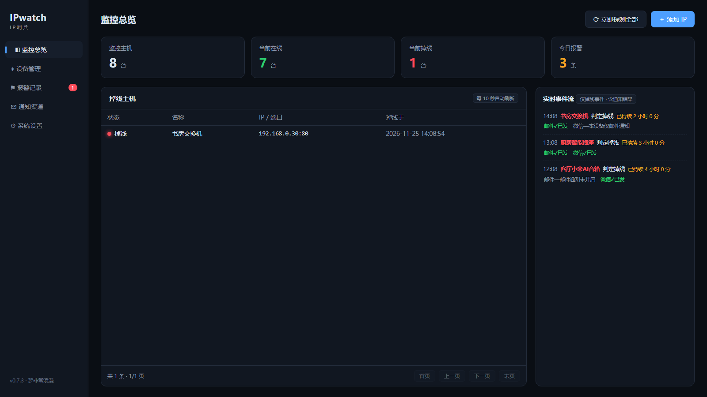
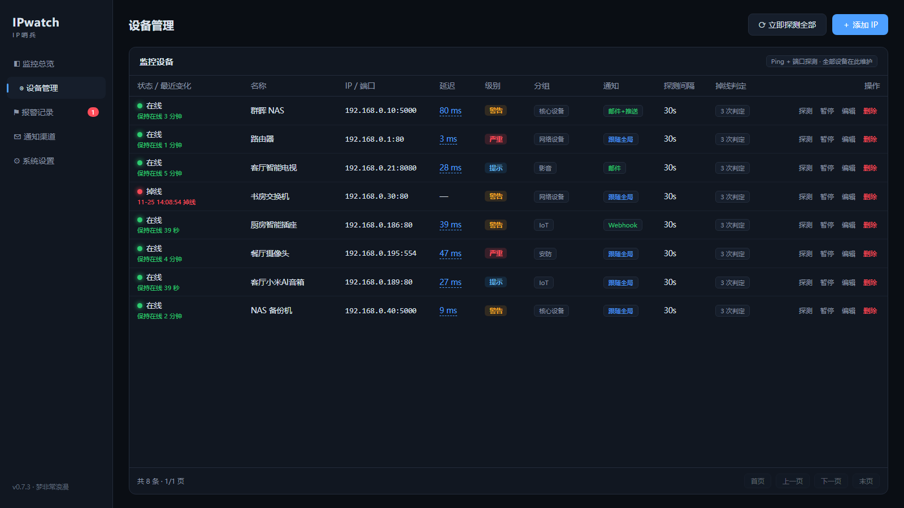

界面预览
监控总览

设备管理

报警记录

通知渠道

轻量主机在线监测工具。添加 IP 后周期探测，掉线自动发邮件或微信提醒，应用内实时查看报警记录——把 NAS 上的设备状态尽在掌握。
添加 IP / 域名与端口，周期探测。ICMP 优先、TCP 兜底，端口关闭但主机在线不再误报掉线。
掉线自动发邮件或微信。支持 Server 酱、企业微信、钉钉（含加签）、飞书和自定义 Webhook，每台设备可单独设渠道。
持续掉线可每 N 小时自动重发提醒；维护窗口内静默告警、照常监控，避免计划内停机误报。
掉线 / 恢复全程留痕，记录带告警级别、通知结果，可标记处理并写备注，支持一键补发和 CSV 导出。
每次探测自动记录延迟，点击设备的延迟数值即可查看 6 小时至 7 天的趋势图与丢包统计。
访问密码与多用户登录保护，支持系统备份 / 还原；邮箱打码显示，避免敏感信息外泄。


点击上方下载按钮，获取最新版 FPK 文件。
将 FPK 文件上传到飞牛 NAS 的任意目录。
在 SSH 中执行本地安装命令。
appcenter-cli install-local /path/to/ipwatch_v0.8.4.fpk安装后在桌面打开 IPwatch，首次进入需设置访问密码。